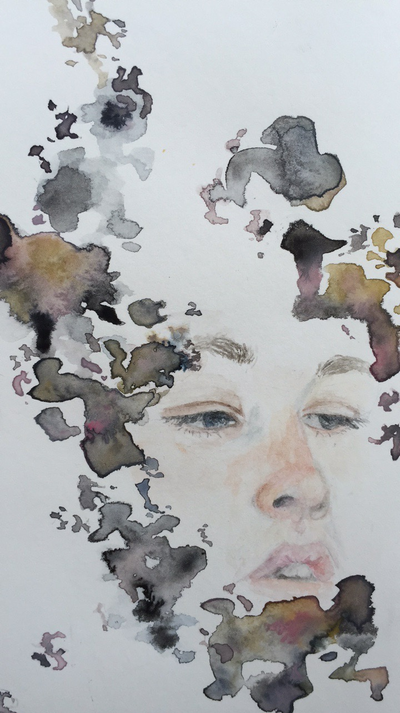
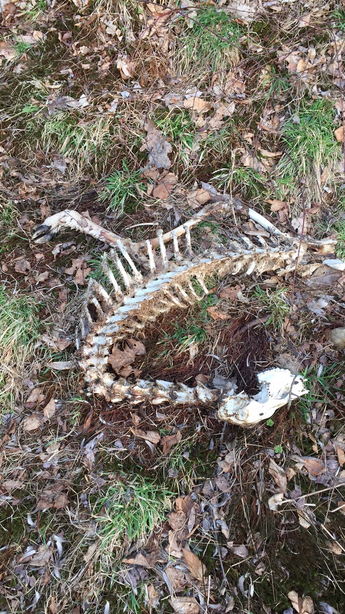
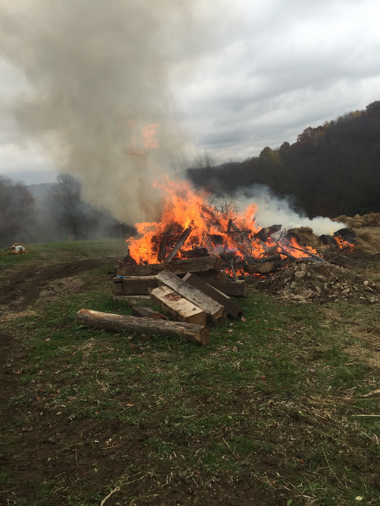

The remanents of the past tell quite a story...be it the bones and flesh of an animal, a little trailer and spring hidden in an overgrown valley, or the arrowhead burried in an untilled field. Our residual stories contribute to the character and richness of a place. Our pasts are owned by the land, it bears the pieces of ourselves we leave behind.

Of who we are and the way we went, we left behind our pasts. You'll find us here when you dig and search, parts of our homes and tales. Imagine us then, when you leave this place. Our stories are yours to keep and repeat.

She flew into the window. THUNK, a month ago, but still she lies on pebbles from the river down the road. My dad shoveled them there 10 years ago. She's buried among the stones, the rusty nails, a bit of straw, and miscellaneous debris.

A fallen fawn on the hillside, so delicate and small. It's almost fall now, the summer's almost gone.

The cool morning mixes with the warmth of the smoke. my cheeks are warm and rosy, amplifying the chill that runs up my spine. We carry bails of old straw from the barn and stare as they are engulfed by the flames. I sometimes think now how many carcinogenics I inhaled as a kid.